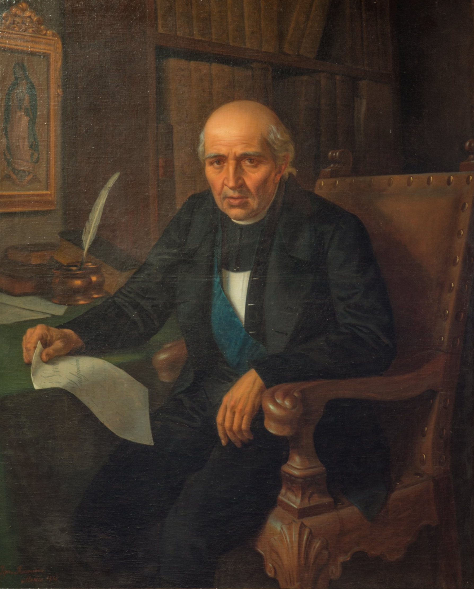
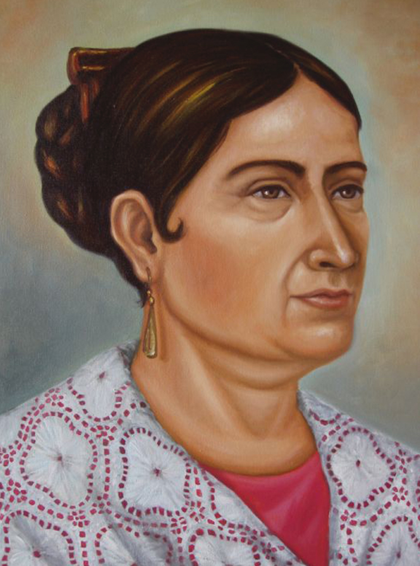
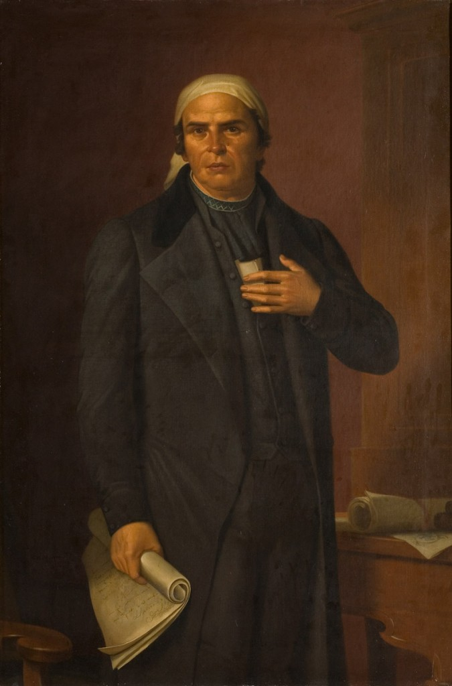
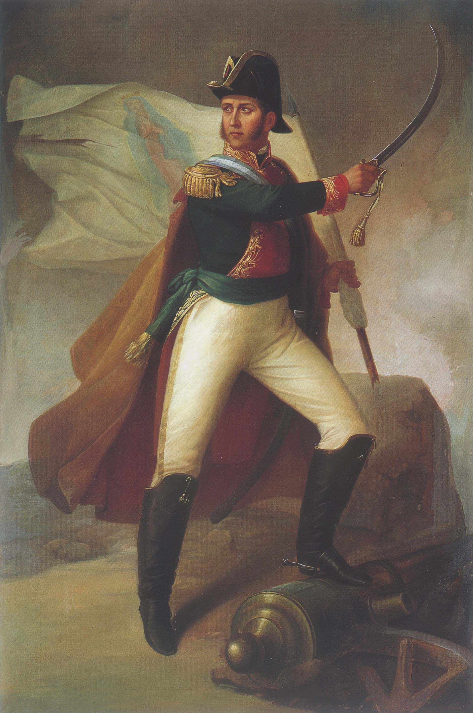
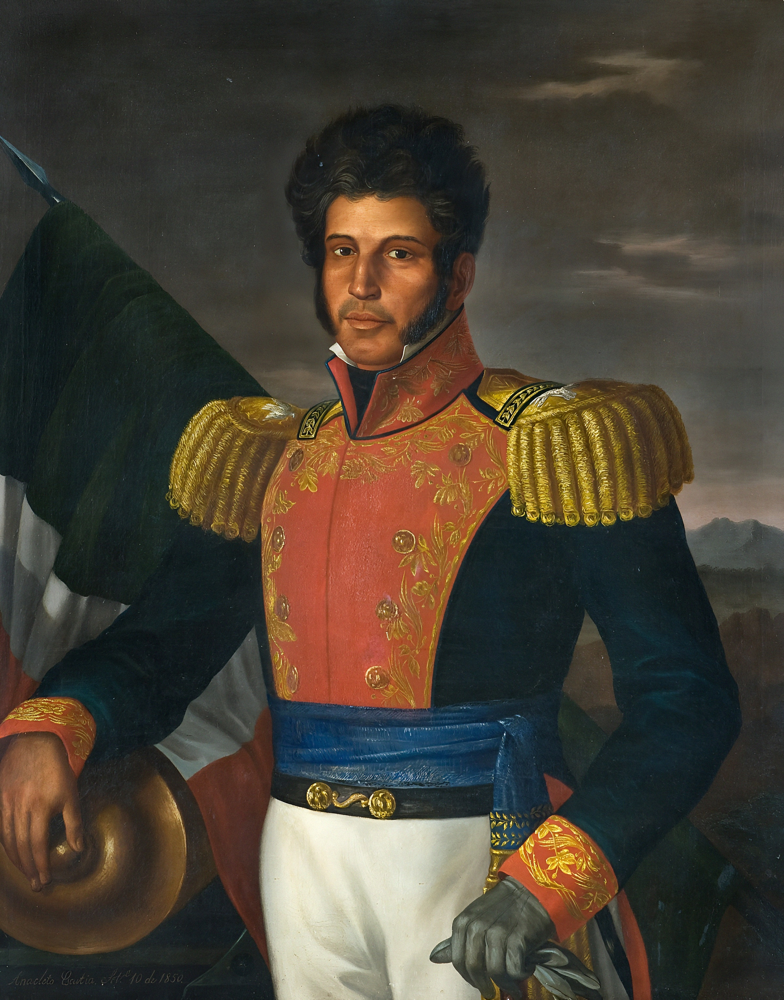
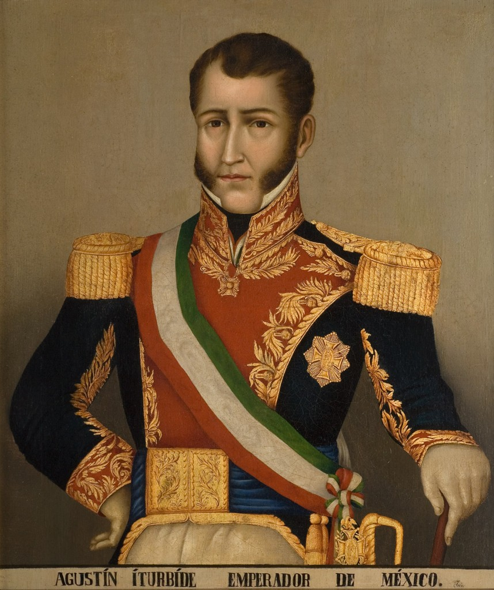

Personajes ilustres de la Independencia de México
Miguel Hidalgo y Costilla (1753–1811):

Conocido como el "Padre de la Patria", fue un sacerdote erudito e influenciado por las ideas de la Ilustración. Madrugada del 16 de septiembre de 1810, convocó al pueblo en la parroquia de Dolores, Guanajuato, dando inicio a la gesta insurgente. Su liderazgo popular unificó a campesinos, indígenas y mestizos bajo el estandarte de la Virgen de Guadalupe, marcando el camino irreversible hacia la emancipación nacional.
Josefa Ortiz de Domínguez (1768–1829):

Conocida históricamente como "La Corregidora de Querétaro", fue una mujer audaz y pieza estratégica fundamental dentro de la Conspiración de Querétaro. Al enterarse de que el plan independentista había sido descubierto por las autoridades virreinales, logró enviar un mensaje decisivo a Ignacio Allende y Miguel Hidalgo, hecho que aceleró el levantamiento armado y evitó la captura de los líderes del movimiento.
José María Morelos y Pavón (1765–1815):

Sacerdote y genio de la estrategia militar apodado el "Siervo de la Nación". Asumió el liderazgo del movimiento tras la muerte de Hidalgo, destacando por sus campañas en el sur del país. Convocó el Congreso de Anáhuac en 1813 y presentó los Sentimientos de la Nación, documento histórico que sentó las bases políticas, sociales y jurídicas para la abolición de la esclavitud y la soberanía del pueblo mexicano.
Ignacio Allende (1769–1811):

Militar de carrera e importante precursor militar de la causa insurgente. Aportó la estructura de disciplina, táctica y organización castrense al contingente de la primera etapa libertadora. Combatió con valentía en batallas cruciales como la de la Alhóndiga de Granaditas y el Monte de las Cruces antes de ser capturado y ajusticiado en Chihuahua.
Vicente Guerrero (1782–1831):

Líder insigne de la resistencia insurgente que mantuvo encendida la llama de la revolución en la Sierra Madre del Sur durante los años de mayor persecución realista. Reconocido por la inmortal frase «La patria es primero» ante la presión de su padre para capitular, fue figura decisiva al pactar la reconciliación del país con el Abrazo de Acatempan.
Agustín de Iturbide (1783–1824):

Militar realista que, comprendiendo el desgaste del conflicto y los cambios políticos en España, decidió sumar fuerzas con la insurrección. Redactó junto a Vicente Guerrero el Plan de Iguala para formar el Ejército Trigarante, logrando la consumación de la Independencia con la entrada triunfal a la Ciudad de México el 27 de septiembre de 1821.